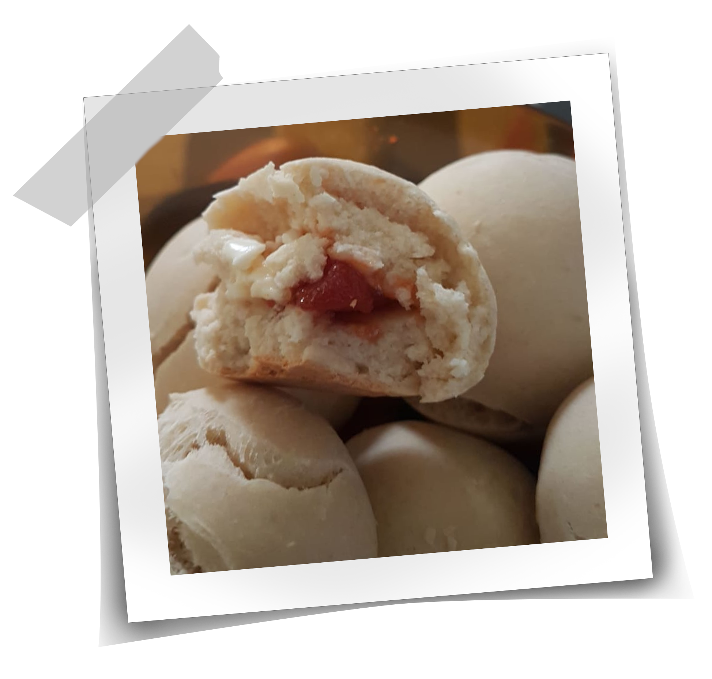
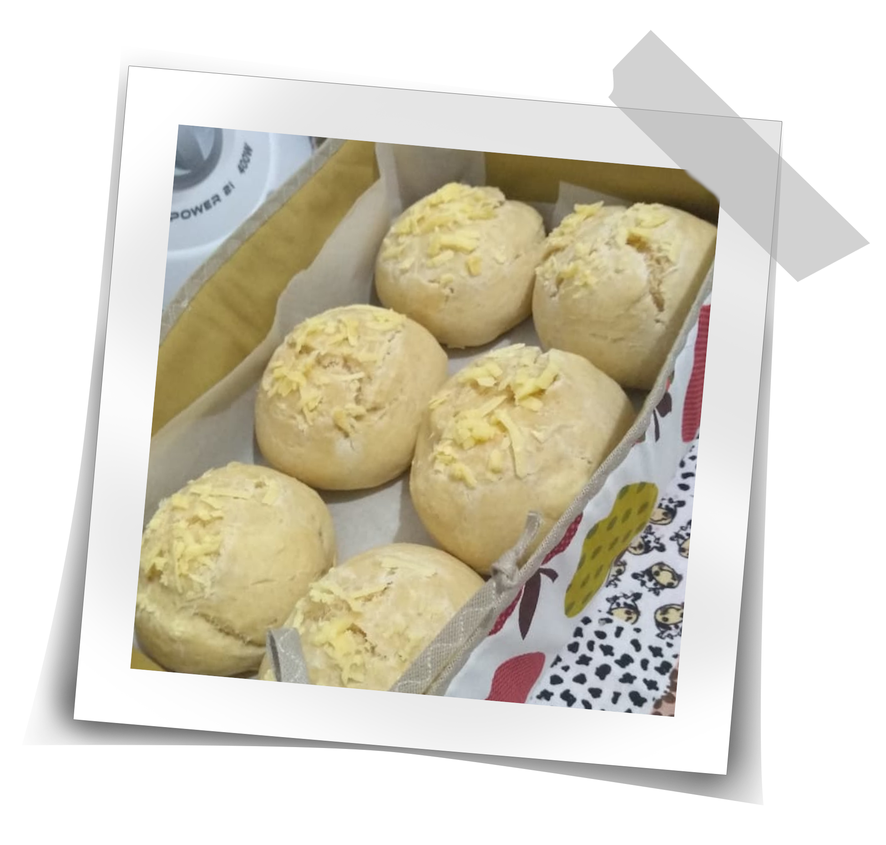

Nosso Livro de Receitas
Aqui você vai encontrar todas as nossas receitas preferidas!
(Em construção)

Pão


Ingredientes:
- 2 copos (americano) de leite morno;
- 2 ovos inteiros;
- 50 g de fermento fresco ou 3 tabletes de 15 g cada;
- 1/2 copo (americano) de óleo;
- 1 xícara (chá) de açúcar;
- 1 kg de farinha de trigo sem fermento (reserve uma xícara e só use-a se for necessário);
- 1/2 colher (sopa) de sal.
Modo de Preparo:
- Em um liquidificador, coloque todos os ingredientes, menos o sal e a farinha;
- Bata até obter uma consistência líquida, cremosa e espumosa;
- Despeje esse líquido numa bacia e adicione aos poucos a farinha e misture a massa até ficar com uma consistência macia e pegajosa;
- Enfarinhe uma superfície e sove a massa com carinho até que ela desgrude das mãos;
- Faça bolinhas com a massa e leve ao forno à 180 °C por aproximadamente 45 minutos;
- Se preferir pode rechear o pão a seu gosto antes de levá-lo ao forno.
<- Voltar